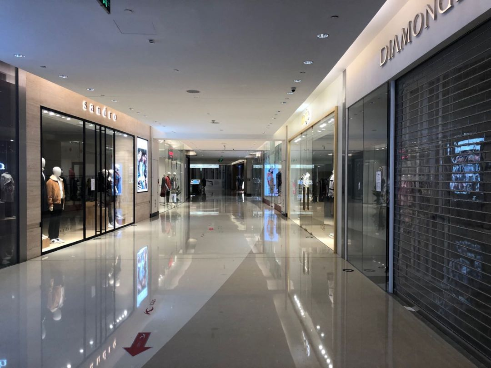
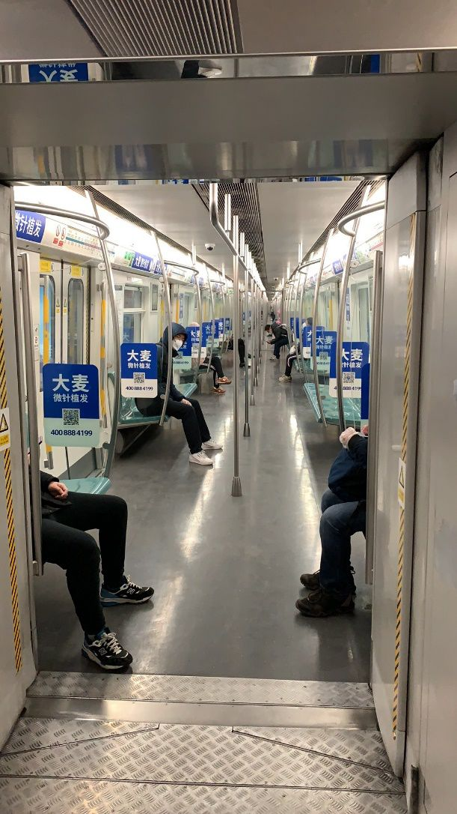

疯狂的口罩：抢购、运钞车待遇与复工的通行证 - 经济观察网 － 专业财经新闻网站
原文链接 备份链接 经济观察报 记者 种昂 2月4日，一批5万只口罩由一辆货车缓缓运进了江苏某汽车配件工厂的大门，刘天元总算松了一口气。作为这家民企高管兼内部疫情防控的副总指挥，他肩负着企业复工的重担。此时，刘天元似乎看到了复工的希望。 …

_
2月10日这个周一，中国多个省市迎来了春节后第一个工作日，虽然比原定假期已推迟一周，但政府、企业和个人所面临的疫情防控压力都不小。当前，湖北省仍需要着力抓好疫情防控，其他地区也需要做好防控的同时有序恢复生产
_
文 |《财经》记者 韩舒淋 辛颖 杨立赟 马霖 吴琼
编辑 |** 余乐**
2月10日早上，数百万早起的北京市民在手机地图上看到了代表交通拥堵的红色。自春节放假至今半个多月来，被推迟一周的第一个工作日，久违的“早高峰”又回来了，但比起日常的拥堵盛况还差了很多。
上午10点左右，往日人流汹涌的北京东三环国贸商城客流不多。《财经》记者现场看到，商场入口有红外线体温检测，开门的商户约占一半，逛街者寥寥。到了午餐时间，开业的餐馆不多，来吃饭的附近写字楼上班族也不多。更多餐馆张贴着暂停营业的通知，重新开门时间预计再延后一周，2月17日。

2月10日复工首日，北京国贸商城北区3楼。摄影/《财经》记者 韩舒淋
2月10日上午，往日拥挤的北京地铁，也不再一座难求。进入地铁需要检测体温，工作人员都佩戴了口罩，但未穿防护服。地铁站内的广播一遍遍重复着已采取的防护措施，一切都在提醒大家，各方面为复工做了很多准备。但《财经》记者调查发现，更多行业恢复到节前的状态，还有待时日。

2月10日复工首日上午10点左右，北京地铁4号线车厢内。供图/张路遥
因为新冠肺炎疫情蔓延，包括北京在内，全国多个省份今年春节假期延长。随着确诊病例增加，各地不断推迟复工日期。全国人民宅在家中，大大降低了人员流动造成疫情传播的风险，但经济活动“停摆”带来的风险也在不断积聚。
2月10日，全国多个省市迎来了节后第一个工作日，拉开了陆续复工潮的帷幕。无论是对于疫情防控还是经济发展，对于国家、企业还是个人，都将是一场挑战。政策的支持和援救、企业和员工的团结和谅解，以及社会各界的互帮互助，将是走出困境的关键。
多管齐下，保障复工安全
自1月23日武汉“封城”开始，新冠肺炎疫情在全国范围蔓延。据国家卫生健康委数据，2月9日全国新增确诊病例3062例，其中湖北2618例，累计确诊已超过4万例。
令人稍感欣慰的是，除湖北外，其他省份的每日新增确诊病例数已从2月3日的890例下降到2月9日的444例，降幅超五成。这表明各地联防联控机制以及严格管理等防控措施正在发挥作用。
面对严重程度不一的疫情，各地结合自身情况制定了不同的复工时间表。疫情相对较轻的东北和西北各省区大多已于2月3日复工，更多的省份则在2月10日迎来第一个工作日，其中包括返城人口压力最大的北京、上海、广州等城市。疫情最严重的湖北省的复工日期定在2月14日。
那么，如何判断此时“复工”是安全的？多位接受《财经》记者采访的医学专家均表示，“每日新增疑似病例”是一个重要指标。“确诊病例的增加是积压下来的，不是新发数。所以要看疑似病例增加，”一位不愿透露姓名的传染病研究人员解释说。
从国家卫健委近一周公布的数字来看，全国和湖北省的新增疑似病例数呈现出稳中有降的趋势，这是一个积极的信号。

全国和湖北省每日新增疑似病例数 制表/李林
第二个指标是潜伏期的计算。前述研究人员称，新冠肺炎病毒的最长潜伏期为14天，大多数人的潜伏期则在7天以内。目前湖北省的复工日期定在2月14日，距离武汉“封城”的日期已经过去了21天。也就是说，“封城”前因防控意识和措施不到位而感染病毒的人群都已“浮出水面”，并得到治疗和隔离。
“武汉是最早发病的地方，感染者大多也是最早一批。如果有这个病毒已经发出来了，没有这个病毒也过了潜伏期了，14天就是安全。”上海瑞金医院感控科主任倪语星对《财经》记者说。“只要做好个人防护，再做好环境的清洁和消毒，逐步复工应该是可以考虑的。”
此次新冠肺炎疫情的爆发，恰逢春节前夕。由于疫情未得到及时、足够的重视，人口大量流动导致了疫情从武汉扩散至全国。现在，尽管防护意识大大提高，人们仍担心复工带来的大规模人口流动，可能会造成新的疫情蔓延。
为此，中央和各地政府已经采取了多种措施，以应对即将到来的返工大潮。首先，各地根据自身的疫情形势，灵活地做出复工安排，如要求学校、幼儿园延迟开学，鼓励有条件的企业在家办公、错岗上班等，事实上形成了“错峰”返工的效果，降低了出行人口聚集的风险。
对于返城路途上可能遇到的染病风险，交通运输部门也实行了多项措施，如要求将长途客运和客轮的成员人数按照额定人数的50％控制客座率，引导乘客间保持一定距离等。各火车站、飞机场均设置了测温装置，火车上还预留了用于隔离发热人员的坐席。
同时，各省市视情况对复工人员做了居家隔离要求，并对复工后人员密集可能带来的疫情风险做了安排。
另一个有助于降低复工潮对疫情影响的因素是，经过半个多月的全国性战疫行动，全民防护意识已经大大提升。城市中已很难见到外出不戴口罩的人。无论机场、火车站、商店、餐厅还是社区街道，都有不同形式的量体温、封闭隔离、行踪排查等防控措施。近一周来湖北省外的确诊病例大幅减少，说明这些措施已经起到了明显的效果。
武汉协和医院感染科主任医师赵雷教授对《财经》记者表示，复工是对前期隔离工作是否到位的一个检验。“如果隔离做得好，复工后可能影响不大。但是如果隔离没做到位或者有疏漏，复工后的病例数可能就增加较快。”他说。

备足口罩，守住复工生命线
返城和复工潮的叠加，使得出行人数大大增加，口罩的需求量也必将激增。在当前的防疫形势下，口罩无疑是最为关键的战略物资。口罩以及其他防疫物资的生产和供应能否跟得上，对于复工和防疫都非常重要。
多个行业复工困难的背景下，防疫物资的相关企业是目前唯一能够正常开工的行业，并且供不应求。目前各地都在想办法扩张口罩产能，亦不乏如富士康、比亚迪、上汽通用五菱这样的跨界造口罩的企业，这也推升了口罩生产原料和设备的需求。进入2月以来，中石化旗下多家工厂紧急增加相关产量，已向市场投放聚丙烯等医卫原料1.5万吨，预计二月份还将继续生产医卫原料约8万吨。
广东东莞是国内口罩生产设备最重要的基地，集中了国内口罩设备的主要供应商。一家东莞口罩设备企业9日对《财经》记者表示，其从大年初三就已复工，现有的订单已经排到了6月，全国各地的客户都有，首批正在陆续交付。
在原材料供应方面，东莞当地工信局已协调上游企业开工，保障供应，并通过政府保障的特殊渠道运输，成本也较平时更贵，而出货的物流都是客户开货车上门自提。
但并非所有设备商都能如此幸运。一家长三角的口罩设备供应商对《财经》记者表示，当地的元器件市场还未开门，现在虽然已经申请复工，但产业链不恢复无法开工。此外，也有不少上游原材料是温州的供应商提供，当前温州疫情严重，物流渠道也非常困难。目前只能希望2月下旬市场恢复之后可以快速投入生产，在手订单的制造周期大约是半个月，但交付周期都在一个月左右。
金融市场对防疫物资的帮助也在同步进行，央行副行长潘功胜在2月7日国务院新闻发布会上表示，央行提供3000亿专项再贷款，通过商业银行向重点医用物品、生活物资的生产、运输、和销售重点企业提供优惠利率信贷支持。
一位山东国有商业银行有关人士对《财经》记者表示，国有商业银行授信流程繁琐，有整体的风险把控操作规范，往往周期较长。但是，目前总行已经下发了快速审批措施，对集团客户授信灵活处理，部分手续可以用款时后补，在新的措施下，预计存量客户一周、新客户两周就可以完成授信。
不过，由于当前防疫物资需求巨大，防疫物资生产企业收到很多采购需求，并且都有预付款，生产资金并不缺。该国有商业银行人士也表示，对当地企业调研发现，企业对银行贷款兴趣并不大，精力都投入在生产上。
亦有口罩企业高管对《财经》记者表示，多家当地银行前来争取发放贷款，有些银行开出的贷款利率甚至仅略高于2%，远低于4.35%的正常贷款利率。但是，这位负责人仍然表示，目前现金流充裕，贷款利率再低也有利息，没有必要。
多家接受采访的防疫企业均透露，虽然目前民用口罩的需求量极大，但由于政府征用时价格被锁定，且上游的物流、原材料成本都在上升，利润率其实相当有限。同时，疫情结束后产能过剩的问题也在浮现。
江苏的一家口罩生产企业高管对《财经》记者表示，该企业主要的原材料从上海采购，一般每个月进一次货，每次数十吨。现在正常物流渠道中断，需要政府开具点对点的通行证，指派医药公司下属的物流企业运输，且原材料供应吃紧，只能两三天运一次，每次数百公斤，这都推升了制造的成本。尽管跟政府沟通可以适当提高产品价格，但总体利润有限。
该企业具备多种民用、工业口罩的生产资质，此前产品全部出口国外，但目前产能已经全部供应给地方政府，用以调配到相关部门和企业使用。工厂还将根据政府要求，新建医用口罩的生产线。和民用口罩不同，医用口罩需要在净化车间中生产，尽管政府会在相关审批流程上会有绿色通道，但整个建设周期预计仍需要4到6个月。
这也就意味着，根据政府要求新投入的医用口罩的产能，暂时并不能解决当前紧缺的需求，待产线投产，疫情或许已经平息，市场情况还是未知数。该负责人表示，此前国内对医控物资的储备没有硬性要求，此次疫情之后预计会有储备需求，但对消化产能贡献多大还不清楚。
企业复工挑战，各方合力克服
除防疫物资行业加足马力生产外，大多数行业在过去的半个多月都处于停工状态。经济停摆对方方面面的冲击显而易见。企业的停产和居民出行的减少使进出口、消费和投资都受到影响。根据天风证券的预测，今年前两个月全国社会零售总额将同比下降10%，固定资产投资将下降4%，出口下降6%，进口下降10-12%。多家国内外机构均将中国全年GDP增速的预期下调到5%左右。
如果全国疫情并不严重的部分地区能够从2月10日开始陆续复工，很多此前严重受损的行业，将还有机会在一季度后半程有所恢复，相关企业生存、员工就业和经济增长，亦将有所回暖。

联想集团在深圳、合肥的工厂已经复工。供图/联想
不过，企业在复工过程中仍有不少难题要克服。
受停工或客流下降的影响，许多企业的资金链已经捉襟见肘，尤其是手中“余粮”不多的中小企业。即使马上复工，市场需求也很难马上回复到疫情出现前的水平。因此，许多企业的现金流预计将持续吃紧。
清华和北大联合发布的一项调研结果显示，在接受调查的995家中小企业中，将近七成的企业现金流最多只能维持两个月，只有不到一成能维持六个月以上。
西贝餐饮董事长贾国龙在接受投中网采访时表示，其两万多名员工的月工资达1.56亿元，在大多数门店停业的情况下，西贝账上的现金撑不过三个月。 好在，贾国龙的“诉苦”立刻引来了银行的关注。2月6日，浦发银行北京分行授信西贝餐饮5.3亿元，其中1.2亿元已经入账。
中小型企业拿到贷款的可能很小，政府的支持政策对他们的帮助更大。中央和各地政府已经出台了各种政策，以帮助企业解决复工中的资金困难问题。
例如，湖北省人民政府2月9日发布了“支持中小微企业共度难关”的通知，宣布了减轻企业负担、强化金融支持和加大财税支持三个方面的措施。具体措施包括下调水电价格、减免房租、加大信贷支持、降低融资成本、减免相关税费、缓缴社保等等。其他省市也都有类似的政策出台。
企业之间也在展开自救与互助行动。万达、金茂、富力、华润置地、融创文旅集团等房企虽然流动性压力都不小，但仍然陆续公布了减免全体商户租金的公告，时间从半个月到一个月不等。“肯定压力都大，共克时艰吧。”贵州万科的一位财务负责人说。
员工因客观原因不能复工却需要安置，也是企业头疼的一大问题。近日，盒马鲜生等互联网零售商提出从餐饮等企业借调闲置员工，一方面解决自身的用工荒，另一方面也缓解餐饮企业的成本压力。
截至2月6号，望湘园、茶颜悦色等21家餐饮企业的1200多人已经加入盒马鲜生的临时用工队伍。大洋世家、阿铭哥牛肉面等餐饮企业的员工也已在京东七鲜超市上岗，七鲜超市为他们购买了新冠疫情补充保险。京东方面称，还有多家餐饮、影院、酒店等企业致电咨询，均有兴趣“共享员工”。
互联网公司也在发挥着自己在网络基础设施方面的优势，为诸多线下行业提供支持。钉钉、企业微信等在线办公软件均免费开放，为在家办公创造条件。腾讯方面透露，2月10日，企业微信迎来了最强的一波开工、上课需求，后台服务量上涨10余倍。
除了自身的资金问题外，企业的复工还受许多外部因素的制约，如供应链上游的原材料企业和物流企业停摆、返乡过年的员工无法回城，以及复工申请的审批流程等等。对于政府而言，则要在防控疫情和稳住经济之间做出决策，但二者并非非此即彼，仍有可改善的空间。
辽宁的一家小型汽车零部件供应商已经于2月10日复工，但该企业负责人对《财经》记者表示，当前生产的零部件只能供应日本、韩国的海外客户，国内客户仍在等待消息。
浙江的一家电气制造企业负责人对《财经》记者介绍，目前企业复工的硬性条件已经基本具备，采购好了口罩、消毒液等防护设备，企业员工也以本地人为主。目前该企业向政府提交了审批材料，但何时能够获批并无明确消息。他表示，政府人手有限，而现在几千家企业都在排队等待审批。
天津一家制造企业的负责人也向《财经》记者表示，该企业2月初就开始向政府递交材料申请复工，但目前何时能复工仍然没有明确信息。如果本地没有复工而竞争对手所在地区复工了，他的企业就将丢掉客户和渠道，对企业生存带来直接影响。
《财经》记者了解到，一些企业对于复工的态度十分矛盾。停工造成的经济损失让他们难以承受，但他们也害怕复工后人员聚集，工人中出现感染新冠肺炎的情况。
在东部某省拥有两家工厂的杜先生就是如此。按原计划，两家工厂都应该在2月3日恢复生产，但出于疫情防控的需要，省内规定各类企业不早于2月10日前复工。此外，工厂里有不少来自湖北省的员工，其中还有两名管理人员。2月10日预计只能有部分员工到岗，生产只能逐步恢复。
“现在的心情很矛盾。我希望安全开工，晚几天没关系，如果冒风险，宁愿不开。”他对《财经》记者说。
▲点击图片查看更多疫情报道
责编 | 蒋丽 lijiang@caijing.com.cn
本文为《财经》杂志原创文章，未经授权不得转载或建立镜像。如需转载，请在文末留言申请并获取授权。
原文链接 备份链接 经济观察报 记者 种昂 2月4日，一批5万只口罩由一辆货车缓缓运进了江苏某汽车配件工厂的大门，刘天元总算松了一口气。作为这家民企高管兼内部疫情防控的副总指挥，他肩负着企业复工的重担。此时，刘天元似乎看到了复工的希望。 …
原文链接 备份链接 _ “不知道那些曾经一起抢出站闸机的人，现在正在遭遇什么？只希望这场疫情早点儿过去。” _ 文 |《财经》记者 王丽娜 袁满 编辑 | 朱弢 疫情之下，每个人的生活都有变化。即便是距离疫情爆发中心武汉千里之外的北京。 …
原文链接 备份链接 尽管防疫成本暂时可控，销售收入降低使不少企业依然面临现金流短缺的风险。短期内公司将如何应对？ _ 实习生 | 丁宁 记者 | 王晓珊 编辑 | 盛倩玉 沈小山 版式 | 韩佳芸 这个年，石青是在接连不断的电话会议中度 …
原文链接 备份链接 _ 全国除湖北以外地区的确诊病例数增速连日放缓，让部分制造企业看到了希望，基于疫情防控的逐步进展，安全复工自救计划也开始酝酿 _ 文 |《财经》记者 张威 编辑 | 袁满 12个园区、1500家企业、近10万员工，总 …
原文链接 备份链接 疫情蔓延令本就身处经济逆周期的中小企业雪上加霜，尽管驰援举措已开始出台，但他们企盼更大规模的政策扶持，比如减费降税 图/ IC 文 |《财经》记者 张颖馨 张威 编辑 | 袁满 “坐了一天，小鸟飞过10只，行人8人， …